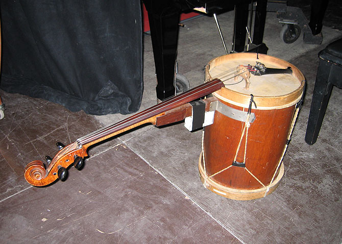

CELLO LEGÜERO
Descripción
Es un híbrido entre el violoncello y el bombo legüero. Posee cuatro cuerdas que pueden ser tocadas con arco, como si fuera un cello, y su parche percutido con una baqueta, como si fuera un bombo.

Ficha técnica
- Nombre: Cello legüero.
- Instrumento al que imita: Violoncello + Bombo legüero.
- Categoría: Cuerda.
- Fecha de estreno: 8 de mayo de 1967.
- Obra de estreno: Piazzolíssimo.